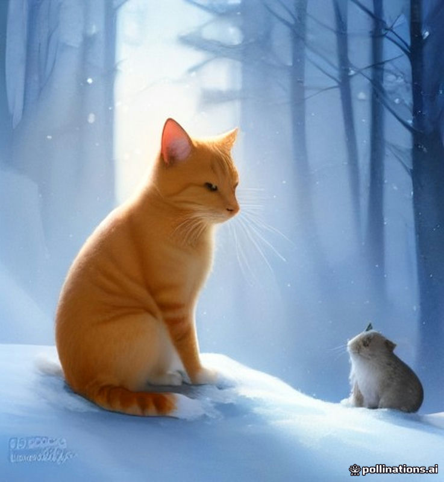
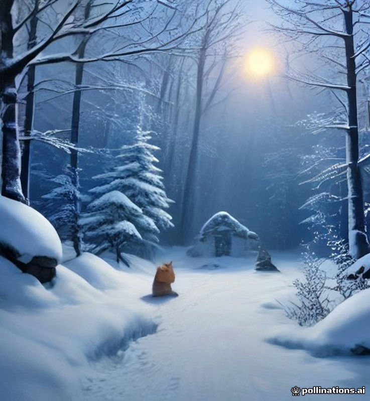
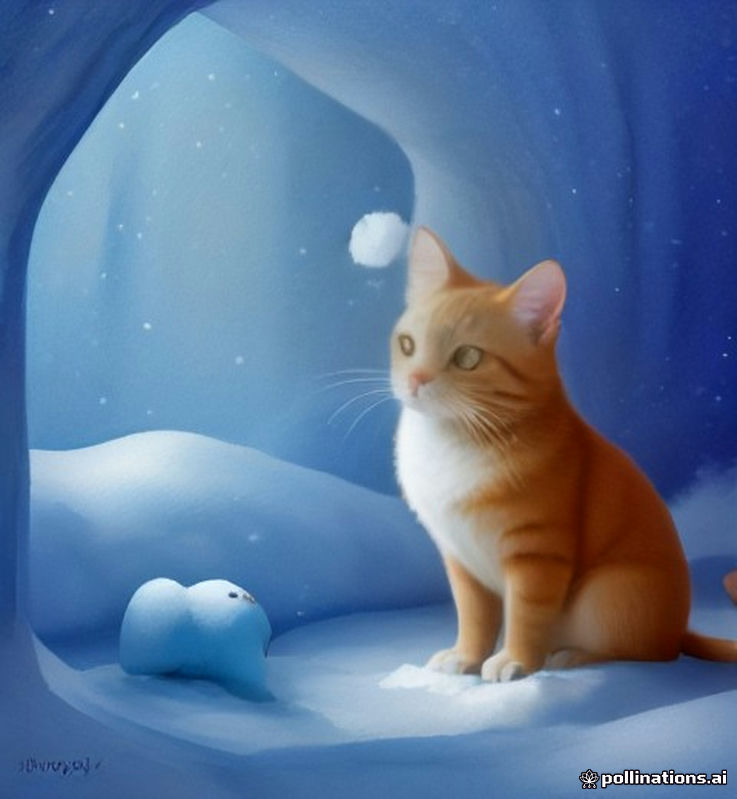
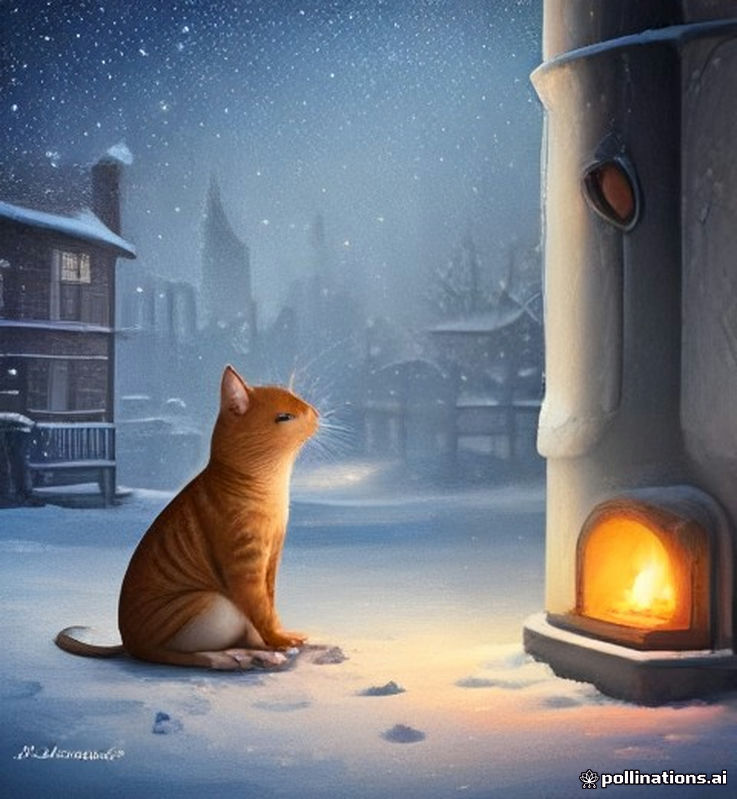
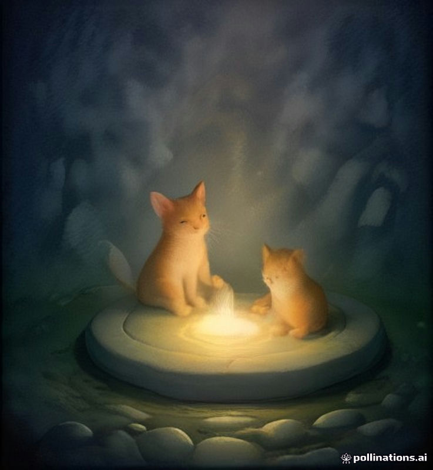

A story about a lost glove that keeps the winter shadows away with its gentle, magical glow.

The sky over Loki’s Town was the color of a thick wool blanket, and the snow fell in silent, heavy flakes. Pip and I were out for our evening patrol, making sure the Market Stall was tucked in for the night. My paws made soft crunch-crunch sounds as we neared the Plaza Fountain. Suddenly, Pip let out a tiny squeak and pointed his little nose toward a drift near the stone bench. Something wasn't right. There was a soft, pulse-like light flickering beneath the white powder, like a fallen star trying to stay awake.

I used my front paw to gently brush away the cold snow. It wasn't a star at all, but a mitten! It was knitted from yarn the color of a twilight sky, and every stitch seemed to hum with a quiet, golden warmth. When I touched it, the glow grew brighter, illuminating my whiskers and Pip’s twitching ears. 'It’s not just a mitten, Pip,' I whispered. 'It’s a hand-warmer for someone who carries the light.' We sat there for a moment, simply watching the way the glow danced against the falling snowflakes.

We looked around the plaza, but the town was quiet and still. Who could have dropped such a magical thing? Pip climbed down my tail and scurried around the mitten, checking for clues. He found a tiny silver thread trailing off toward the Bakery, but it vanished into the wind. We couldn't leave it here to be buried and forgotten. A mitten this bright must belong to someone very special, perhaps the person who paints the frost on the windows or the one who wakes up the sun each morning.

I carefully picked up the mitten by its cuff and carried it to the top of the Plaza Fountain. I placed it right on the stone rim where the glow could be seen from every corner of the town. 'There,' I meowed softly. 'Now the owner can find it, and anyone who is lost in the dark can follow the light home.' As we walked back to my house, I felt a strange warmth in my own chest that had nothing to do with my teal scarf. Even a lost mitten can make the world brighter.